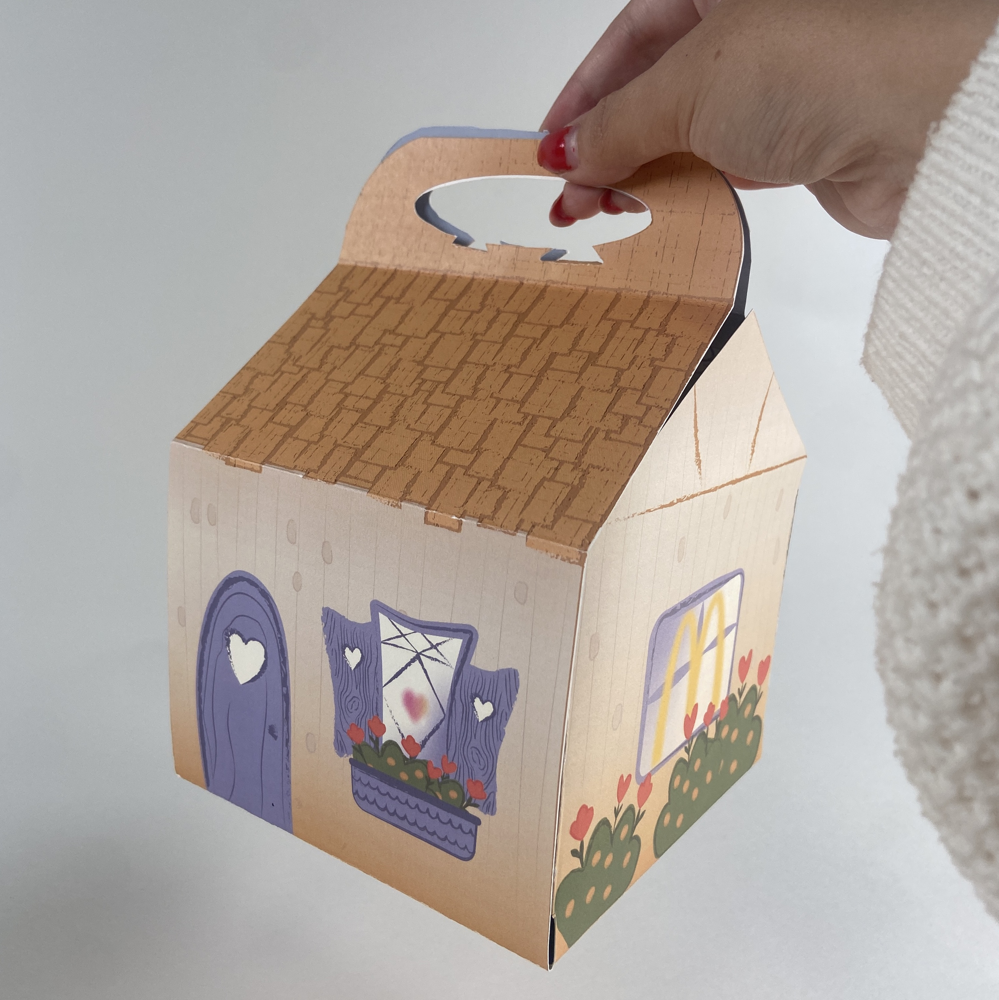
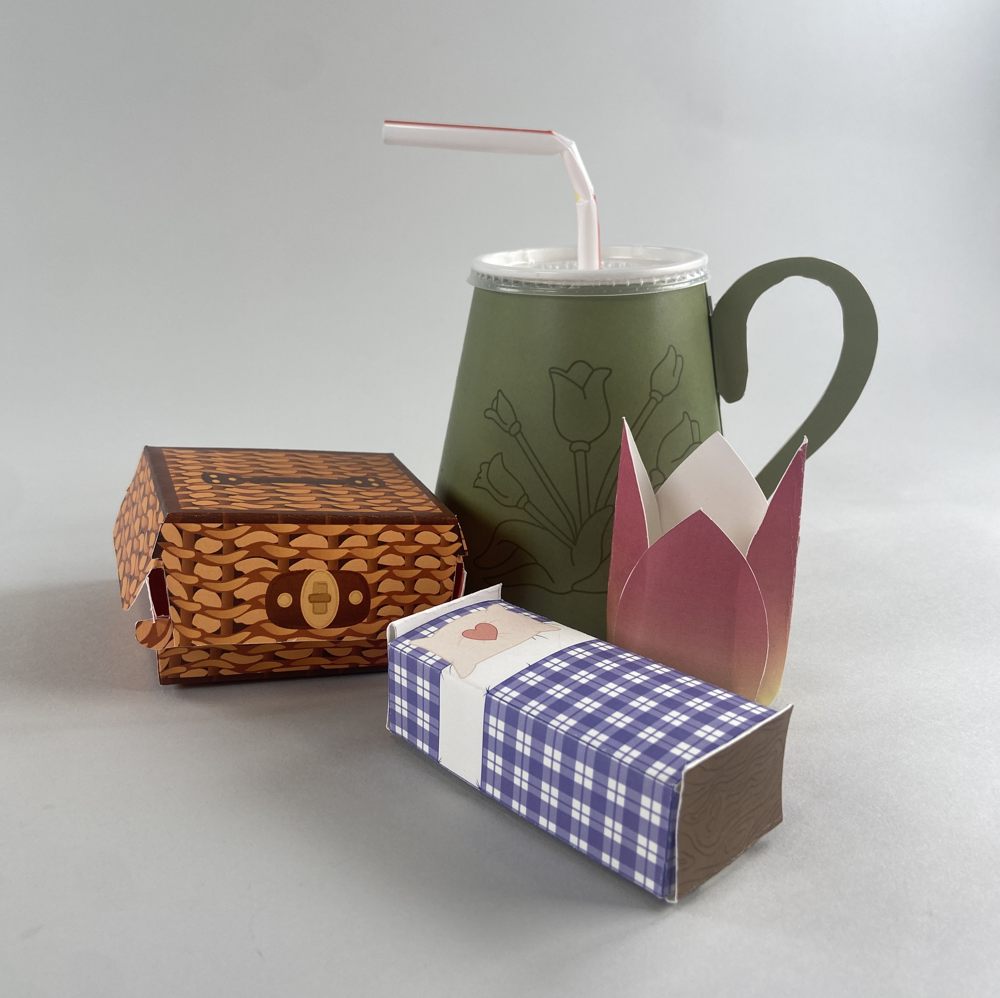
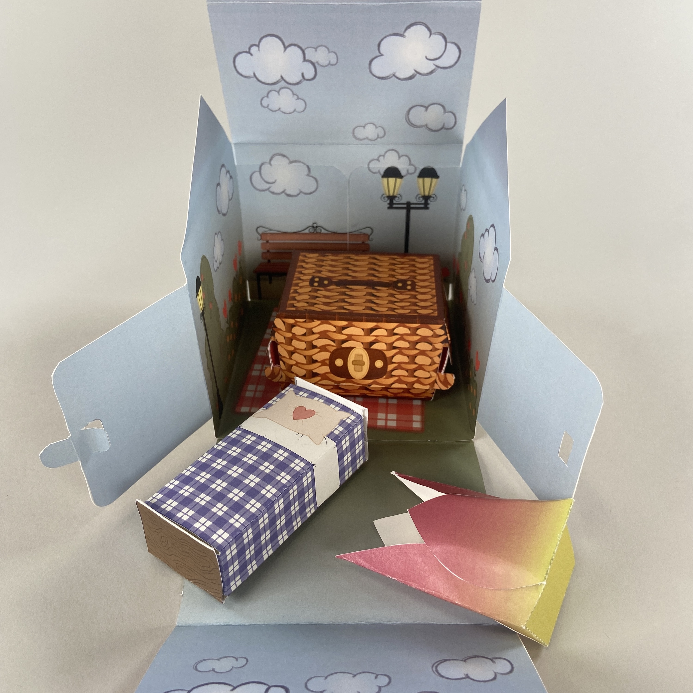
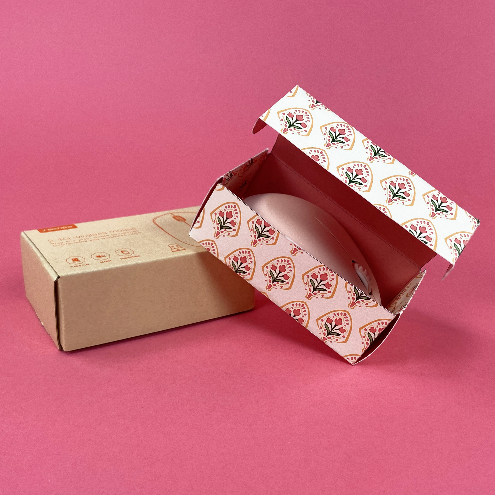
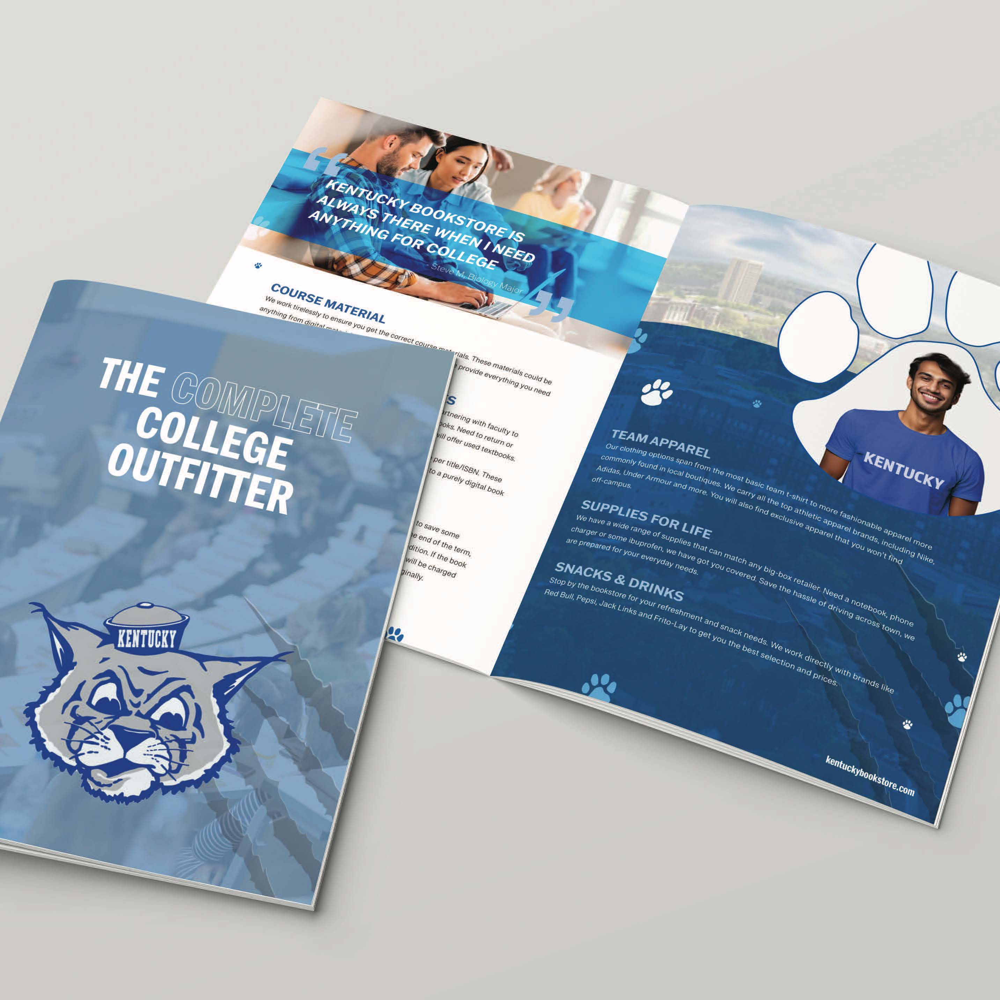

Hello!
My name is Ariana Garber, and I am currently a third-year student at the University of Nebraska-Lincoln, where I am passionately pursuing a triple major in Advertising & Public Relations, Journalism, and Graphic Design.
This diverse academic focus allows me to explore the intersections of communication, creativity, and visual storytelling. In addition to my majors, I am also pursuing minors in Business and Digital Humanities, which further enhance my understanding of the digital landscape and the economic principles that underpin successful media strategies.
As I look ahead to my career, I am focused on becoming a digital media strategist after graduation. I aim to blend my skills and knowledge in strategic planning and design to craft innovative and effective communication solutions.
Through my studies and hands-on experiences, I am developing a robust skill set that prepares me to thrive in the fast-evolving world of digital media and creative communication, where I hope to make a meaningful impact.